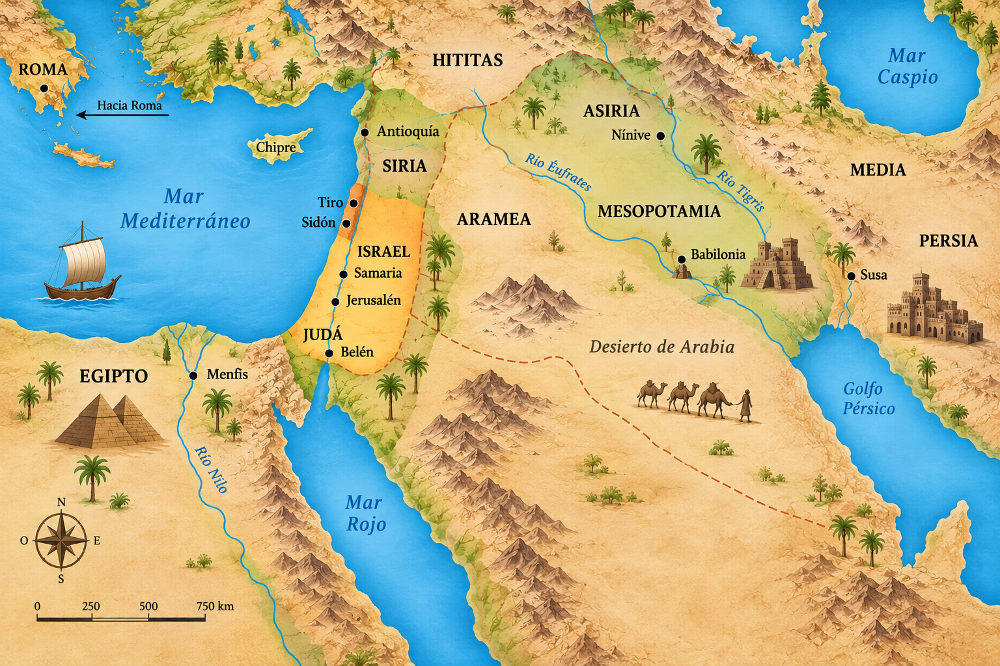

Orientación histórica
Línea de tiempo bíblica
Una vista de contexto para situar pueblos, territorios y desplazamientos alrededor de Jerusalén y Egipto.
Mapa de referencia
Entre el Nilo, Jerusalén y Mesopotamia
Las rutas son una guía visual de estudio. Las fechas se presentan como aproximaciones y no sustituyen el análisis histórico especializado.

Hitos para recorrer
Una historia en movimiento
Selecciona un hito para ver su región y una puerta de entrada al texto bíblico.